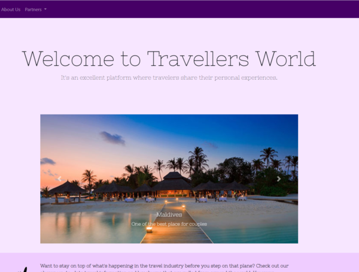
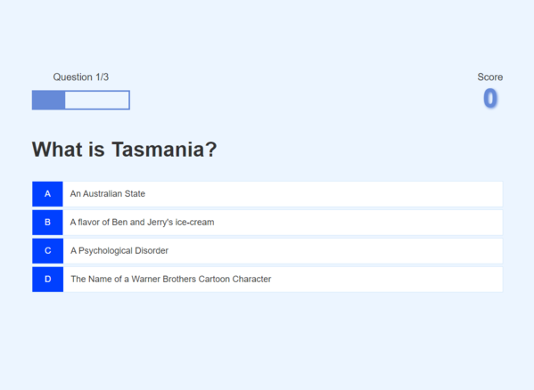
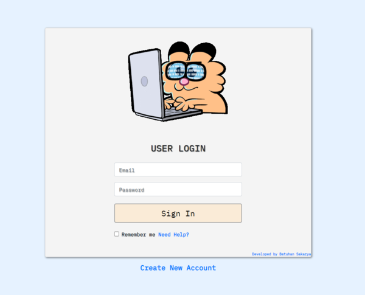

Batuhan Sakarya
Information Technology Engineering (IT)
I have been spent my time looking for a start in the exciting world of IT and Business Solutions where I can learn a trade and realize a lifetime ambition.I believe that my interests and skills are a good match for the IT industry. However, I always like to solving business problems.
I passionate about web development technologies since when I was a kid. I had always curious and doing research on web technologies. Further, I developed small projects. Day by day I increase my base knowledge to be successful in this information age.
Featured Projects
Clicked the View project to see each project. All projects and source file can be found at Github
Travellers-Portal
The goal is to connect people worldwide and also dive into different cultures. Further, it allows to meet new people or make a difference. Live a life less ordinary. As small group adventure travel experts share their passion for authentic, responsible, and life-changing travel experiences. what sets this web project apart from the rest. It will connect and make strong relationships, you’ll travel with friends, leave as family, and see the world in a way you never thought possible.
Quiz Application
A web-based Quiz Application is an application that gives you brief tutorials in general culture.Application conducts a quiz in the form of multiple-choice questions and there are only 3 questions them and every time when you start the quiz app shuffles the questions gives randomly. After the completion of the quiz, you can save the score.
Animated Login Form
User authentication is very common in modern web technologies. It is a security mechanism that is used to restrict unauthorized access to member-only areas and tools on a site. In this project, I created a simple registration and login system only for the front-end part.
Technical Knowledge
Hardware
Assembly, maintenance, troubleshooting, and update drivers.
Operating System
Microsoft Windows, Linux, Android, IOS, MacOS
Programing Languages:
- JavaScript
- C++
- Java
- Django
- HTML, CSS
- MySQL, MongoDB
Education
American University in Bosnia and Herzegovina (AUBiH) - Tuzla
Bachelor of Engineering in Information Technology, 2017 - 2021
Successfully completed 4-year Faculty of Engineering
Dokuz Eylul University (DEU) - Izmir, Turkey
Tourism and Hospitality Management, 2014 - 2016
Successfully completed 2-years Department of Management and administration